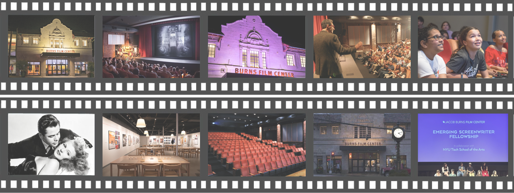
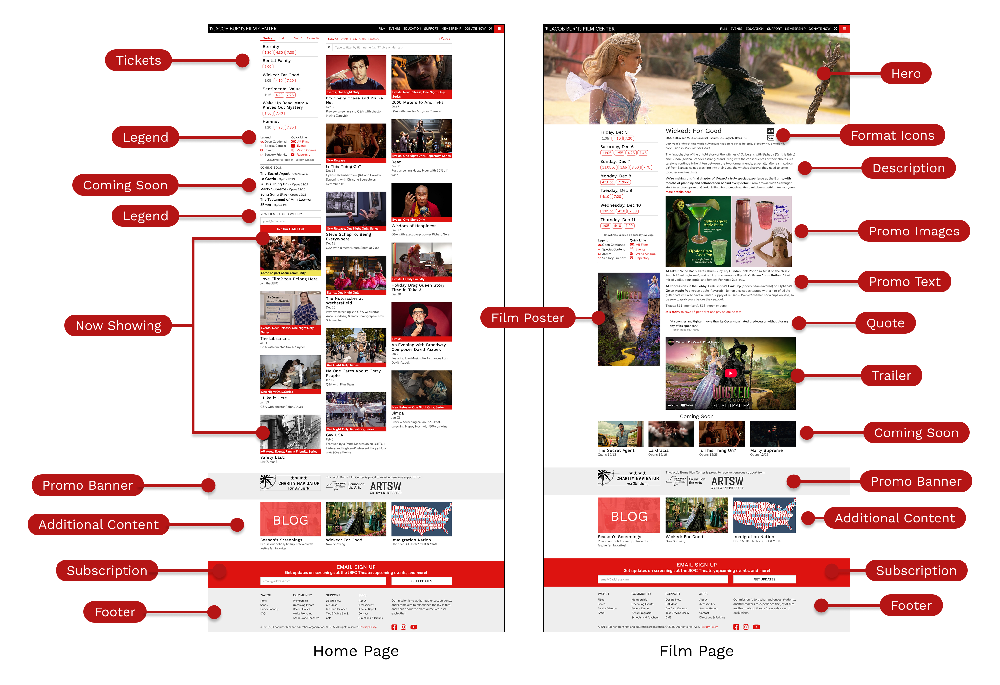
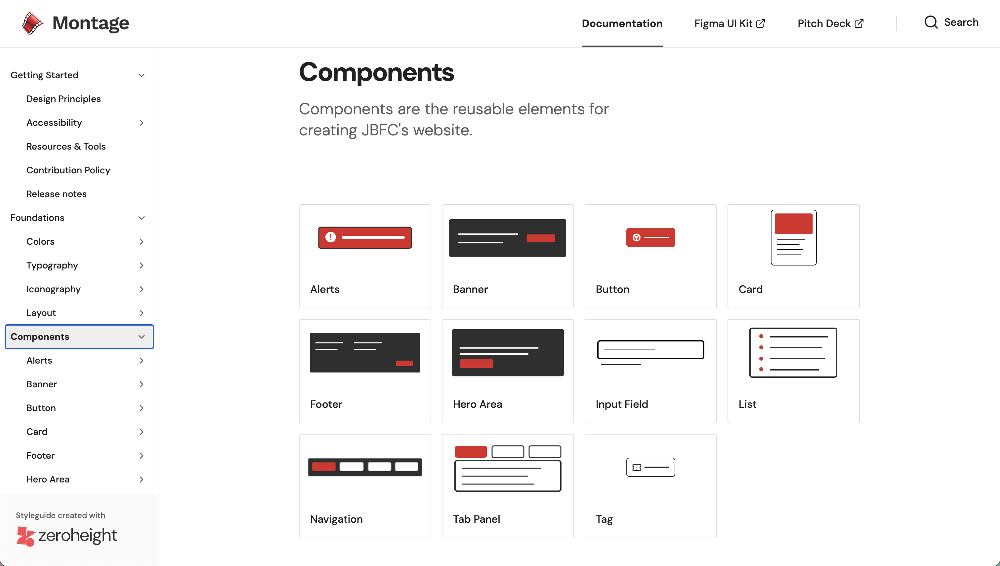
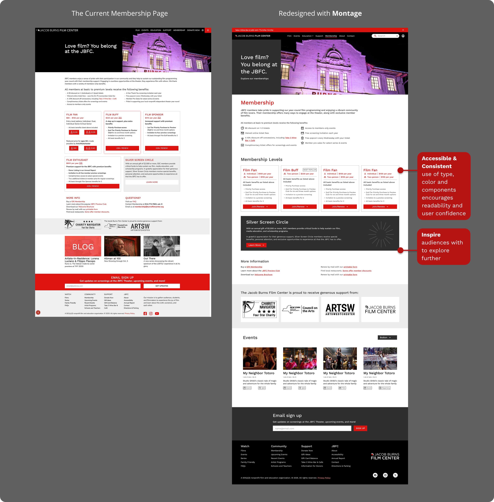
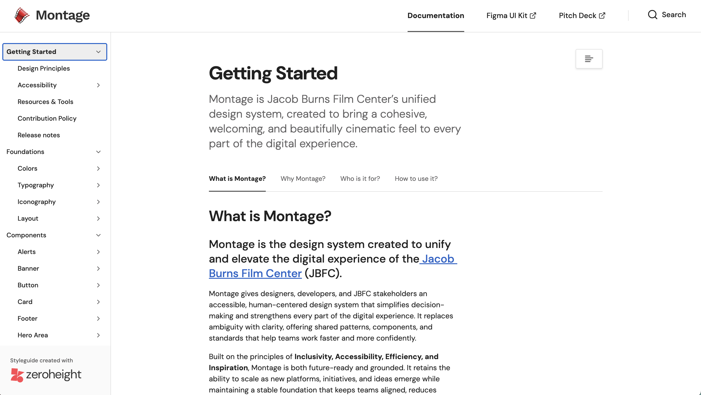
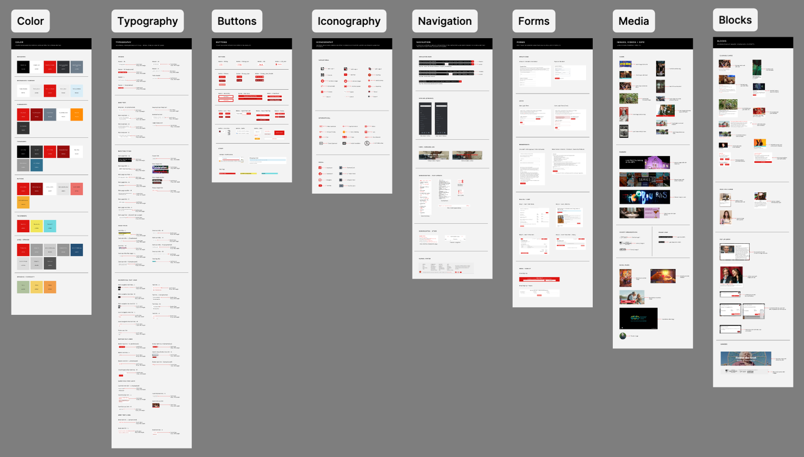
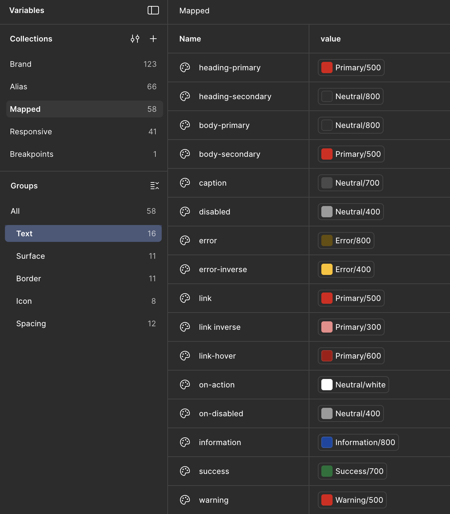
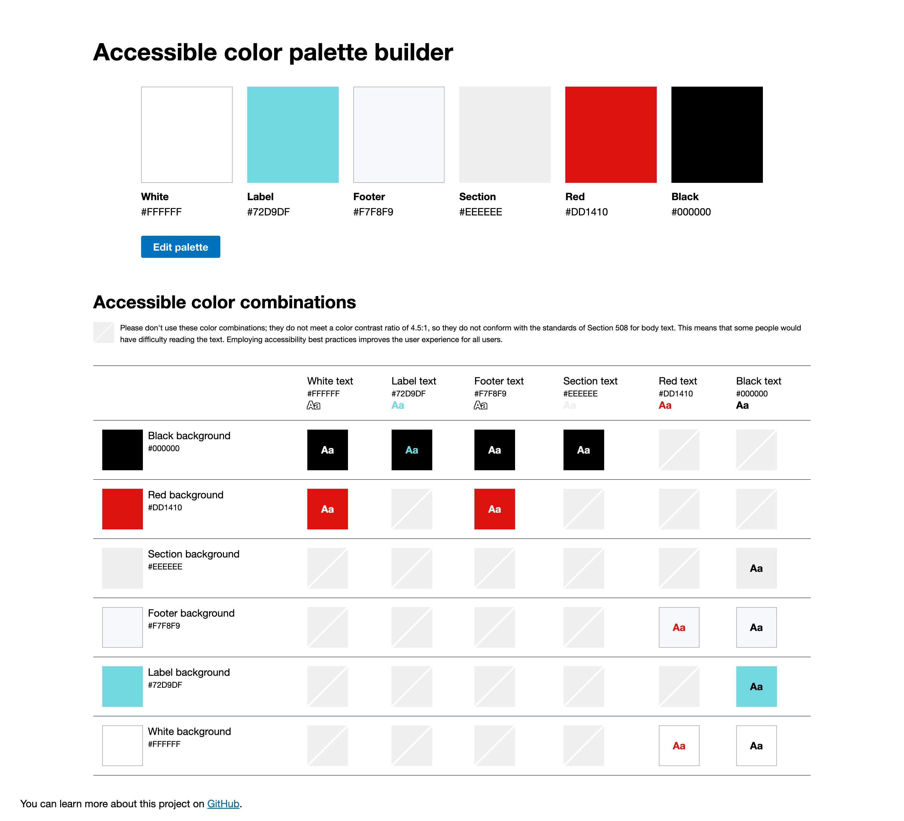
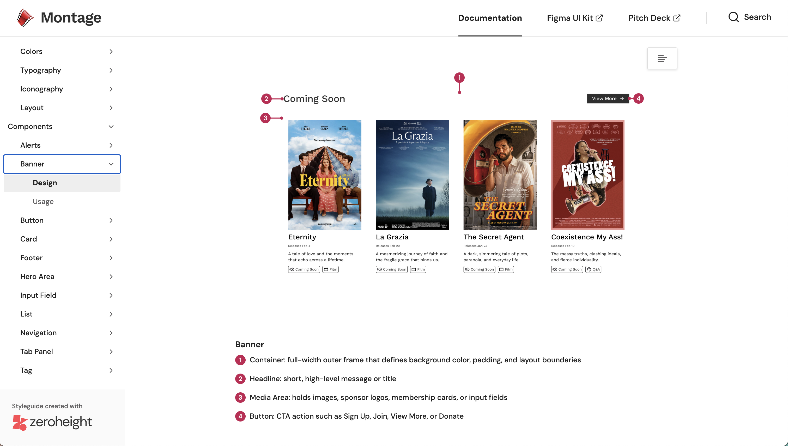

Building a design system for a nonprofit film center from scratch.
JBFC needs a design system that actually scales.
The Jacob Burns Film Center is a nonprofit film and arts center in Pleasantville, NY. The center provides educational and film programs for the community. Their site was informative but inconsistent, every page seemed like someone was reinventing the wheel.

I worked with my team to build Montage a full design system to unify JBFC's platform, make it accessible, and give the internal team tools they'd actually want to use.
Our approach
Start with the mess
We ran a full UI inventory before touching Figma. That was the easiest way to understand the problem before solving it.
Accessibility first
We incorporated WCAG accessibility guidelines into every component's definition and anatomy.
Build for adoption
We wanted to design a system that people would actually use, not just well-organized files.
The site had grown organically disjointed.
When we audited the live site, the scope of design debt was evident. The current site had:
- 20+ shades of gray: all used inconsistently throughout the site.
- No shared components: each page rebuilt the same buttons and cards from scratch, in a different way.
- Accessibility wasn't on the radar: contrast failures and missing focus states throughout every core flow.

The existing site was dense, inconsistent, and inaccessible. Every page was slightly different and information was scatteredMontage: 50+ components, semantic tokens, living docs.
The system covers the full stack of color and type tokens, reusable components with documented variants, and full page templates. All synced to a Zeroheight site that updates automatically when Figma does.

The component library consists of buttons, cards, navigation, tags, and more with all states documentedValidating our solution
We ran internal sprints where participants built landing pages entirely from Montage components. A page that used to take a full day took under an hour. And it came out more consistent than anything made before the system existed.
 Drag, configure, and ship with Montage. No CSS edits, no detaching instances, and no worrying about accessibility
Drag, configure, and ship with Montage. No CSS edits, no detaching instances, and no worrying about accessibility
Before & after
We applied Montage to JBFC's two highest-traffic journeys: the homepage and membership flow.
 Homepage with Montage: intentional whitespace, a consistent type scale, and components that actually talk to each other
Homepage with Montage: intentional whitespace, a consistent type scale, and components that actually talk to each other

Membership with Montage: same offerings, clearer messaging, and still unmistakably JBFCDocumentation that doesn't go stale
We built the docs on Zeroheight, which syncs directly with Figma. Token updates and new components are reflected immediately with no manual exports.

The living documentation site contains usage guidance, do/don't examples, and embedded Figma componentsWe started with the messy stuff and it made everything else better.
Good design systems don't start with pretty components. They start with a thorough audit of what currently exists or what is actually needed.
UI Inventory & Audit
We dismantled the existing site into atomic parts documenting every color, type style, spacing value, and UI pattern cataloged. The inventory revealed 20+ gray values, four distinct button styles, and three navigation patterns that all behaved differently. Seeing the full picture in one view was the easiest way to understand the scope of the problem.

The UI inventory of the current site revealed every inconsistency before we redesigned anythingSemantic Design Tokens
Instead of "gray-4" we created --color-surface-background. Instead of "red" we created --color-link-hover. Every token maps to a meaning, not just a value and they live in Figma Variables mapped 1:1 to CSS design tokens. We structured this so design-to-dev handoff can be frictionless.

Semantic color tokens where every value has a role, not just a hexComponent Architecture
We used Figma's Component Properties like Booleans, Instance Swaps, Nested Variants to build a library that's flexible without being fragile. Designers configure size, state, and content from the sidebar. No detaching or manual overrides that break on update.
 Toggling states and sizes entirely from the sidebar to keep customization and usage flexible
Toggling states and sizes entirely from the sidebar to keep customization and usage flexible
Accessibility as a Constraint, Not a Checklist
Every component required passing contrast checks, keyboard navigation review, and focus-state testing before it could ship. We used Figma's Contrast plugin alongside manual browser testing. Accessibility was written into the component's definition not added at the end.

Contrast ratios at every interactive state to ensure accessibility across default, hover, focus, and disabled statesIt not only looks better but it works better.
We validated Montage with internal designer testing. The results were evident, designers were able to create faster builds, achieve full accessibility compliance, and were excited to use it.
"The components are clean and intuitive and save me so much time."
— Designer feedback, internal usability testing
Montage makes it easy to create accessible designs that scale with the siteWhat I learned
Adoption is a design problem too.
The hardest part wasn't building the components it was getting people to trust them. It was crucial to keep JBFC's spirit alive in the new system while also adding efficiency, consistency, and accessibility. A design system is a tool that designers and developers use, not just a collection of files.
Retrofitting accessibility is ten times harder than starting with it.
The audit showed exactly how fast issues compound. When accessibility is a constraint from day one it makes a system easier to maintain and scale.
Think in patterns, not pages.
The biggest mindset shift was moving from "how should this page look?" to "what pattern does this page need?" When you're designing the system itself, you start catching inconsistencies before they ever get built.
Design systems are culture change disguised as a UI kit.
— Lauren LoPrete